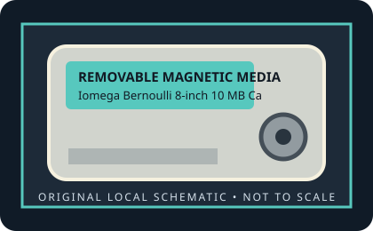

[ REMOVABLE MEDIA // MODEL-SPECIFIC RECORD ]
Iomega Bernoulli 8-inch 10 MB Cartridge
Original Iomega Bernoulli Box, 8-inch media generation (introduced 1982). 10 MB nominal removable-disk capacity. The disk is an 8-inch flexible magnetic medium housed in the large rigid Bernoulli cartridge.

IDENTIFICATION: Verify the exact capacity, physical format, and generation printed on the medium. A cartridge has no host interface of its own; drive interface and system support must be checked against the exact reader model.
Format, capacity and compatibility
| Product / media model | Iomega Bernoulli 8-inch 10 MB Cartridge |
|---|---|
| Generation / format | Original Iomega Bernoulli Box, 8-inch media generation (introduced 1982). |
| Capacity and medium | 10 MB nominal removable-disk capacity. The disk is an 8-inch flexible magnetic medium housed in the large rigid Bernoulli cartridge. |
| Media and drive interface | Cartridge has no electrical interface. Original Bernoulli Box drive/controller variants attached to supported hosts through interface-specific controllers; check the exact drive manual and host adapter. |
| Compatibility | Requires an original Bernoulli Box drive that supports the 10 MB 8-inch cartridge. The medium has no electrical interface; host connectivity belongs to the drive/controller. It is not interchangeable with 5.25-inch Bernoulli Box II media. |
| Version and model caveat | The 10 MB version is an original 8-inch Bernoulli capacity, distinct from both 5 MB and 20 MB media. Match the cartridge capacity and generation to the drive before loading. |
Handling and preservation
Keep the cartridge in its protective case, away from dust, moisture, heat, strong magnetic fields, and physical shock. Do not open a sealed cartridge or force it into a drive. For preservation, image read-only with a known-compatible mechanism, retain the source media, record the drive/interface used, and verify copied data with checksums.
- Photograph the label and shell before use; preserve packaging, write-protect state, and acquisition notes.
- Keep at least two independent verified copies of important data. A legacy removable cartridge by itself is not an archival strategy.
Model and generation notes
The 10 MB version is an original 8-inch Bernoulli capacity, distinct from both 5 MB and 20 MB media. Match the cartridge capacity and generation to the drive before loading.
Storage capacity names and drive interface names describe different things: confirm the cartridge format/generation first, then check the exact reader model, host connector, controller, operating-system driver, and filesystem separately.
Sources and standards
- Museum of Obsolete Media — Iomega Bernoulli disk, 8-inchDocuments the 8-inch magnetic cartridge and the original family’s 5, 10, and 20 MB capacities.
- InfoWorld, August 1985 — Bernoulli Box review (Google Books)Contemporary coverage of the original Bernoulli Box product generation.
- Internet Archive — Bernoulli Box 10 MB documentation searchLocates archived manuals and product literature for the 10 MB original-generation medium.
Discontinued-media specifications are cross-checked against period product material and museum/archive documentation. Family-level history does not replace the exact drive manual for interchangeability.